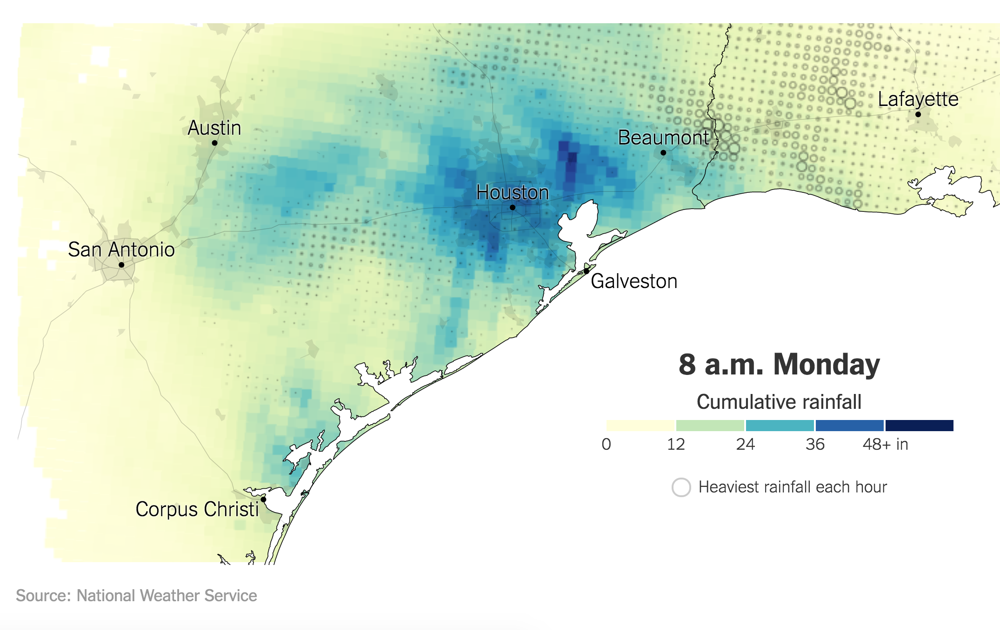
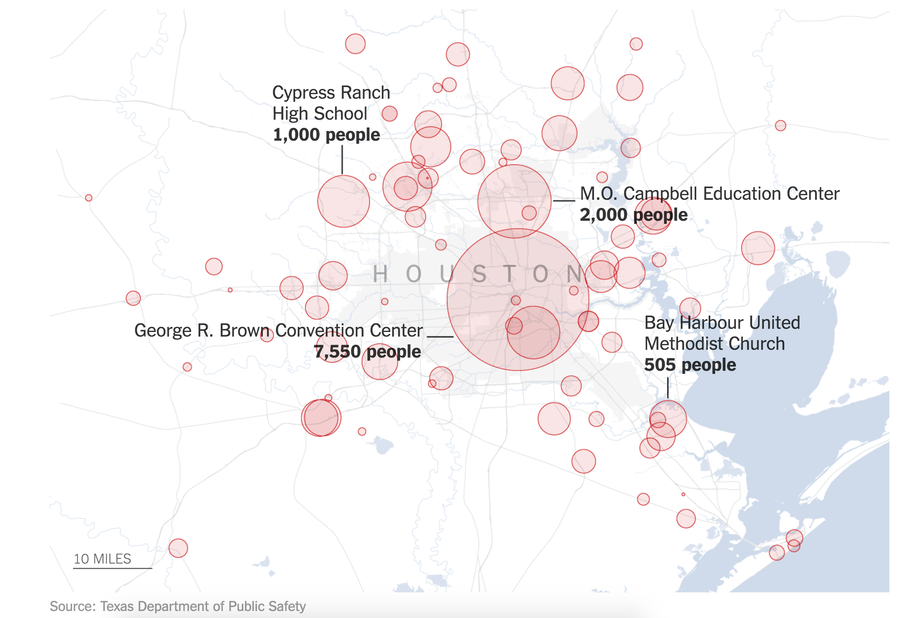

Cristina Logg is a Master in City Planning candidate in the Environmental Policy and Planning (EPP) group at MIT's Department of Urban Studies and Planning (DUSP). Cristina is pursuing both the Environmental Planning Certificate from DUSP and the Sustainability Certificate from the Sustainability Initiative. Prior to joining MIT, Cristina worked as a Program Administrator for the Tufts International Relations Program and as a Freedom of Information Act Litigation Case Officer for the U.S. Department of State. Cristina has a Masters in Conflict Resolution from Georgetown University, in which she focused on environmental and corporate conflict resolution and change management. Cristina has had training on issues of international and domestic environmental policy, corporate sustainability, and consensus building methods.
As a planner fascinated by how to solve for and plan for environmental problems, many of which are exacerbated by climate change, in an urban context, the hurricane that Houston last year was particularly interesting. After Hurricane Harvey, the New York Times published a fascinating article showing, via a variety of graphics, how Houston was impacted by Harvey and its devastating rainfall. Two graphics are pictured below with the first showing, at one point in time, how much rain had fallen in the Houston area. The second shows shelters and their associated capacity in the Houston region.
 